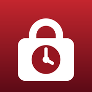

Support
Lockout: Strict App Blocker for iPhone
Some apps still open during a lock
iOS never blocks apps on its Always Allowed list. Open Settings → Screen Time → Always Allowed and remove every app except Phone. Messages and Maps are on that list by default.
Can I end a lock early?
No. That is the point of Lockout: once the 10-second countdown finishes, only time ends a lock. Phone and emergency calls always work.
A lock didn't end exactly on time
iOS ends locks when the phone is next in use, so the end can be a little late, never early. A back-up release follows 5 minutes later.
I forgot my Screen Time passcode (Strict mode)
Open Lockout → Strict mode → Screen Time passcode and ask to see it. It is shown 24 hours later, as long as no lock is running then.
Contact
Open an issue at github.com/MatteoCaruso1/lockout/issues. We read every one.